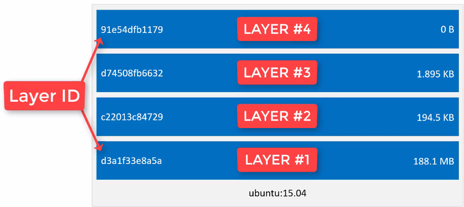

04 - Discovering Docker
Image vs. Container
A docker image is a combination of a file system and parameter, which contains everything you need to run a file
A docker image has no state attach to it
A docker image can be downloaded, built and run
A docker container is like an instance of a docker image
A docker image can contain many containers
A docker image is the result of a build process (defined in a Dockerfile)
Docker containers are immutable, so changes made in them during run are commonly lost after the container is closed
Start a container
$ docker run -it <image_name> <application>
e.g. docker run -it alpine sh which starts the shell on the alpine image
Multiple containers of the same image can be accessed / opened at the same time (while changes to one container does not affect the others)
-> Running a docker images creates a docker container
Downloading and storing images
The Docker Hub contains various images ready for download
The Docker Hub is a Docker Registry
A Docker Registry is a place where to store your docker images
A Docker Registry contains various Docker Repositories
In a Docker Repository resides a collection of equally named Docker images
Each of these images can be distinguished by it tag (which is the version of an image)
-> Docker Hub (https://hub.docker.com/) is like Github, but for Docker images (place to get other images and to publish your own images, either public or private)
Docker Hub has official images and public (third party) images
Third party images can be recognized by the additional namespace for the pull command e.g. docker pull nickjj/faye
Run an image from a url:
$ docker run <image_url>
e.g. docker run docker.io/library/hello-world
Since this is an official repo, you can simply run
$ docker run hello-world
Docker build process
Two ways to build a docker image
docker commit … (commit changes to current image -> creates a new image layer containing changes) -> won’t be used in this tutorial
Dockerfile (recipe book to create a docker image) -> superior method
Docker images have layers
Each layer is like a self-contained file
A docker image is a stack of multiple layers
Image layers work like in a git repo -> only changed layers are updated